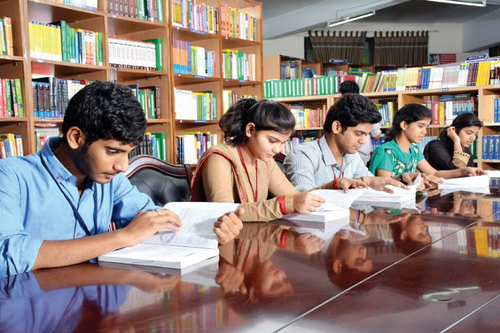

About Library!!

The Central library at Vignan's University, inaugurated in the year of 2005 by the Coal and Mines Minister, Govt. of India, Sri. Dasari Narayana Rao has an exclusive user friendly and comfort oriented infrastructure, which is spread over a space of about 5902 Sqm. It is an air conditioned, aesthetically designed facility with plenty of indoor greenery, modern furniture and reprographic conveniences. There are separate enclaves for individual and group study. Students and staff can avail the library from 7.00 AM to 10.00 PM everyday and refer to a wide variety of resources, apart from the books relevant to their curriculum, like a rich collection of titles and journals useful for general study and research activities. The NTR library stocks more than 1,07,381 volumes, which include competitive exam resources for UPSC, IES etc, and plenty of audio-visual learning materials. Also, 261 national and international referred journals are available.

NTR VIGNAN LIBRARY
The Central library at Vignan's University, inaugurated in the year of 2005 by the Coal and Mines Minister, Govt. of India, Sri. Dasari Narayana Rao has an exclusive user friendly and comfort oriented infrastructure, which is spread over a space of about 5902 Sqm. It is an air conditioned, aesthetically designed facility with plenty of indoor greenery, modern furniture and reprographic conveniences. There are separate enclaves for individual and group study. Students and staff can avail the library from 7.00 AM to 10.00 PM everyday and refer to a wide variety of resources, apart from the books relevant to their curriculum, like a rich collection of titles and journals useful for general study and research activities. The NTR library stocks more than 1,07,381 volumes, which include competitive exam resources for UPSC, IES etc, and plenty of audio-visual learning materials. Also, 261 national and international referred journals are available.NTR Vignan Library subscribes to more than 6,748 e-journals (like IEEE, ASME, ASCE, Springer, EBSCO, JSTOR & DELNET) and has access to 10,000 DOAJ. Library is a member of an inter-library loan service (DELNET), INFLIBNET and is also supported by reprographic facilities
Dean - Library & Information Sciences
Dr. K. V. Krishna Kishore
B.E., M. Tech., Ph.D.
Mail Id: dean_its@vignan.ac.in / kishorekvk_1@yahoo.com
Librarian
Smt. A. Rajani Kumari M.A., M. L.I. Sc., PGDLAN, M. Phil., (Ph.D)
Mail Id: librarian@vignan.ac.in (or) rajanivu96@gmail.com
Phone: 0863 - 2344737, 09533562529
Dr. K. V. Krishna Kishore
B.E., M. Tech., Ph.D.
Mail Id: dean_its@vignan.ac.in / kishorekvk_1@yahoo.com
Librarian
Smt. A. Rajani Kumari M.A., M. L.I. Sc., PGDLAN, M. Phil., (Ph.D)
Mail Id: librarian@vignan.ac.in (or) rajanivu96@gmail.com
Phone: 0863 - 2344737, 09533562529
NTR Vignan Library Timings
NTR Memorial Library is kept open on 325 days in a year with the following timings:
Working Days : 7.00 AM - 10.00 PM
Issue Timings : 8.00 AM - 6.00 PM
Holidays : 10.00 AM - 5.00 PM
Changes in Timings during the vacation period will be informed on the Library Notice Board and through circular.
NTR Memorial Library is kept open on 325 days in a year with the following timings:
Working Days : 7.00 AM - 10.00 PM
Issue Timings : 8.00 AM - 6.00 PM
Holidays : 10.00 AM - 5.00 PM
Changes in Timings during the vacation period will be informed on the Library Notice Board and through circular.